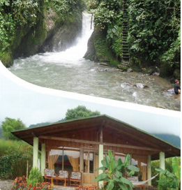

El reportaje
Alumno:
El reportaje
Alumno:
Lee el siguiente reportaje:
De fin de semana en Mindo

En esta ocasión, les contaré sobre la grata experiencia que resulta salir de fin de semana en compañía de la familia, pasarla tan entretenido y sentir que todos gozaron y descansaron en el viaje.
Así es, esto ocurre en Mindo, un paraje en el sector subtropical de la provincia de Pichincha. Ríos, cascadas, aves, mariposas, orquídeas, vegetación de bosque primario y secundario, deliciosa comida, confortables hospedajes, deporte, aventura, cordialidad, tranquilidad; estas son las palabras que describen este discreto lugar ubicado en un valle rodeado de 19 000 hectáreas protegidas.
Mindo es un pequeño pueblo, localizado apenas a dos horas y media de Quito. Se llega por una carretera de primer orden, la autopista Calacalí-La Independencia. A unos veinte minutos de Nanegalito, a mano izquierda de la vía, se encuentra la entrada hacia el pueblo donde viven aproximadamente 2 500 habitantes que se dedican principalmente a la agricultura, crianza de ganado y al turismo.
“El clima del sector tiende a ser más suave que en Quito, la temperatura es aproximadamente entre los 15 °C y 24 °C durante todo el año. Las lluvias son comunes, pero entre los meses de mayo a septiembre el clima se torna más seco”. Así nos lo hace saber el joven lugareño que es nuestro guía.
¿Qué podemos observar?
“Este lugar es una de las principales atracciones del turismo ecológico provincial para los amantes de la naturaleza que quieren observar algunos bosques occidentales del Ecuador. En sus alrededores, se encuentran unas 500 variedades de pájaros, aproximadamente 40 clases de mariposas, más de 170 especie de orquídeas; también tiene 2 000 especies de plantas nativas en el área, de entre las cuales sobresalen, por su colorido: las bromelias, heliconias, helechos, vides, musgos y líquenes que crecen en abundancia aquí. Esta gran variedad en una región tan pequeña es única”, nos comenta.
Aquí existen casi 500 especies de aves, entre las cuales destaca el gallo de la peña, de color rojo brillante, que construye sus nidos en las vertiginosas paredes verticales de los cañones selváticos. En Mindo, se dan cita aves como el tucán, papagayos, búhos, patos salvajes, quetzales, mirlos, colibríes y caciques entre otros.
¿Qué podemos hacer?
Mindo es también un área perfecta para los deportes de aventura. Equitación, ciclismo de montaña, tubing o descenso de aguas bravas por el río Mindo, que constituye una experiencia apasionante para disfrutar de la fauna y los paisajes naturales mientras vamos río abajo.
Hay diferentes caminos ecológicos de paseo en los alrededores de Mindo, donde se puede encontrar hermosas cascadas, montañas, sitios de pesca y se puede hacer con toda la familia el river, rafting en llantas, canopy, rappeling y otros con diferentes niveles de dificultad. Además, se puede hacer tours con los guías profesionales, para mirar y conocer mariposas, aves y ranas en su hábitat natural.
¿Qué comeremos?
Para el almuerzo: ceviche de palmito, tilapia con ensalada y patacones o trucha al ajillo, las infaltables yuquitas fritas y jugo de naranja.
Para la noche: un lomo a la piedra, bolones de verde con chicharrón y café recién pasado.
Y para descansar, Mindo cuenta con cabañas construidas con caña de guadua, de chonta y paja en formas bastante llamativas, piscinas, baño turco y sauna.
En la noche, pudimos apreciar en el parque del pueblo la presentación de una banda que interpretaba música nacional, con tanto ritmo y gusto que muchos de los turistas, grandes y chicos, que nos encontrábamos en ese momento cedimos a la tentación de bailar y ahí estuvimos muy entretenidos fotografiándonos junto al grupo musical o en las clásicas rondas de baile que surgen de los ritmos tradicionales y populares.
¿Qué nos llamó la atención?
La gran cantidad de familias que se dan cita en este hermoso lugar para distraerse y descansar. La cordialidad de la gente del pueblo, que se desvive por atender a los visitantes, puesto que aprovecha cualquier oportunidad para informar sobre lo que se puede conocer y disfrutar. Sobre todo, la naturaleza en todo su esplendor y por todos lados.
¡Gracias, Mindo! Volveremos a visitarte.
 Comprendo para saber
Comprendo para saber
El reportaje
Es un texto periodístico extenso y de carácter informativo. Incluye lo observado, lo experimentado e investigado por el periodista sobre un hecho que no es noticia, pero es de actualidad. Es un trabajo de información que se estructura alrededor de un tema y contiene antecedentes, comparaciones, derivaciones y consecuencias. El reportaje maneja un estilo narrativo descriptivo, y debe presentar información veraz. Frecuentemente, está acompañado con fotografías e ilustraciones y se enriquece con datos informativos, noticias, opiniones y comentarios. Este tipo de texto aparece en periódicos y revistas.